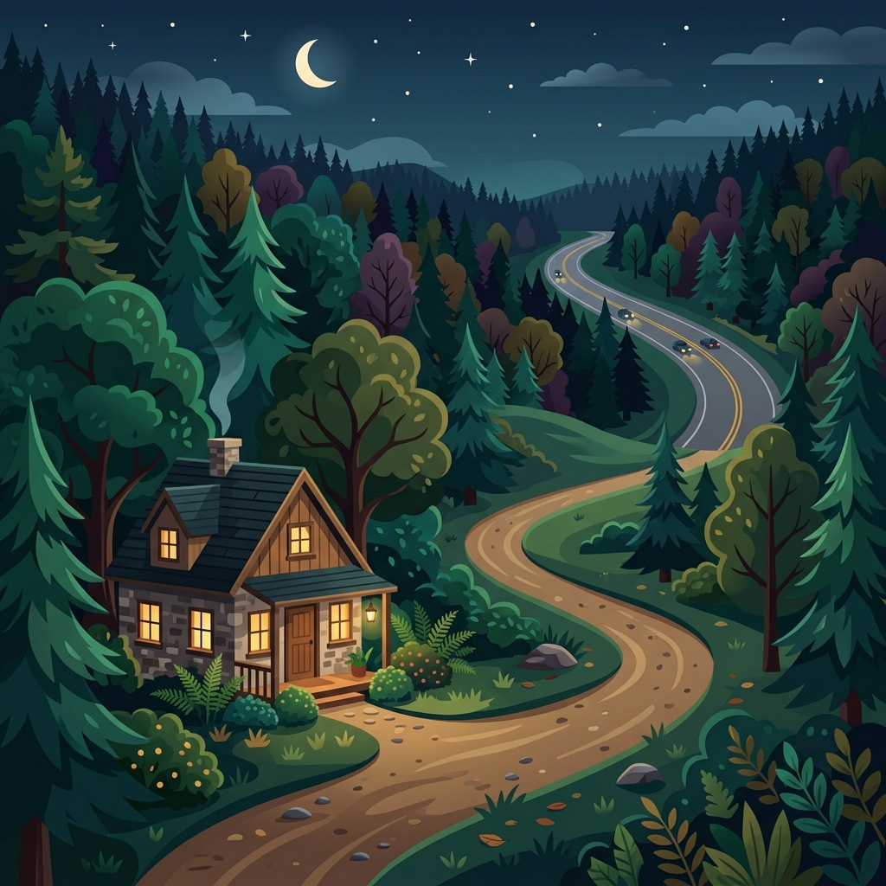
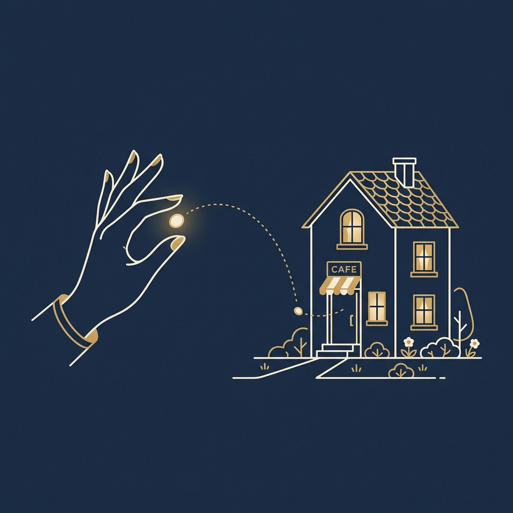
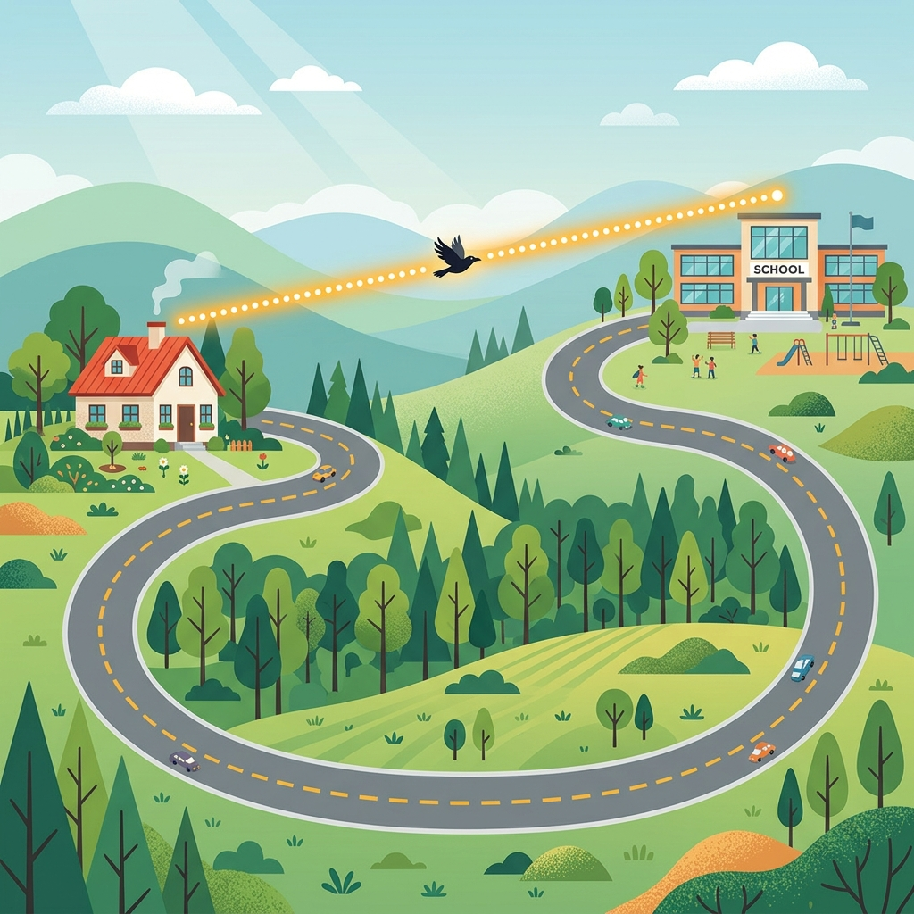
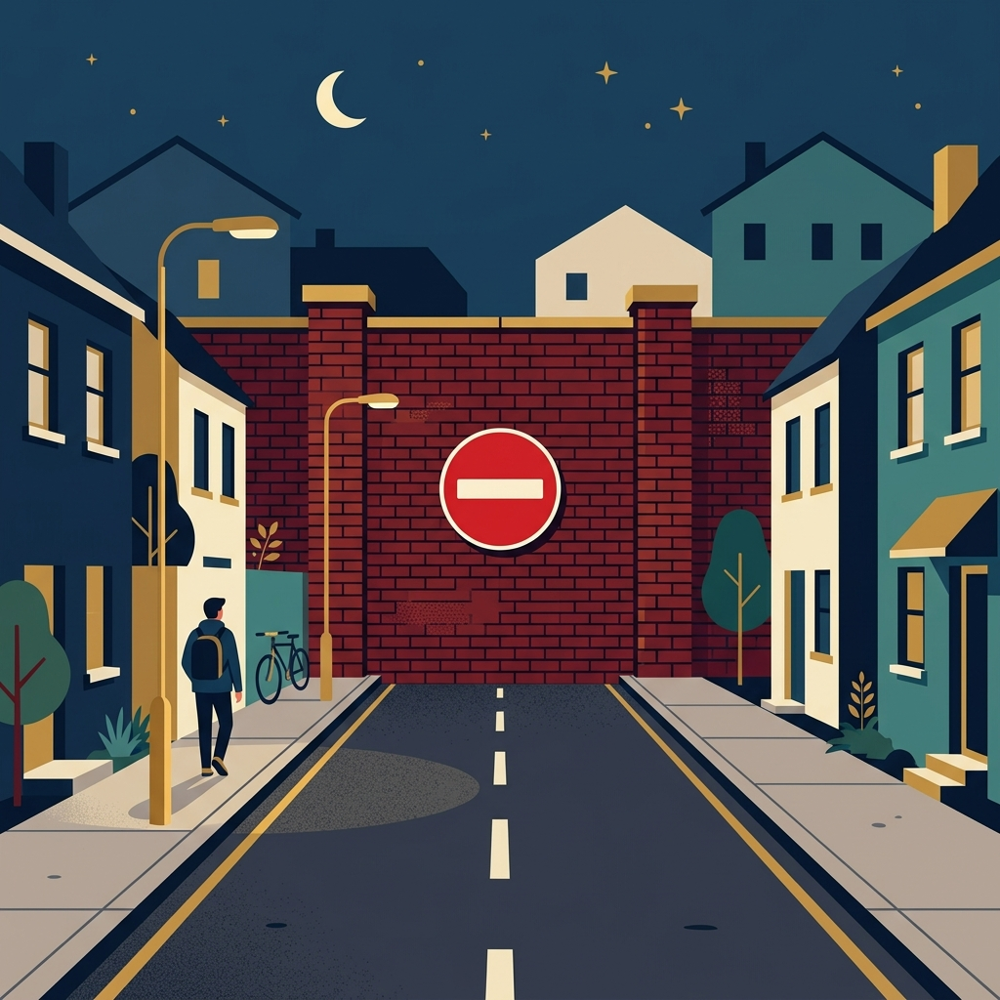
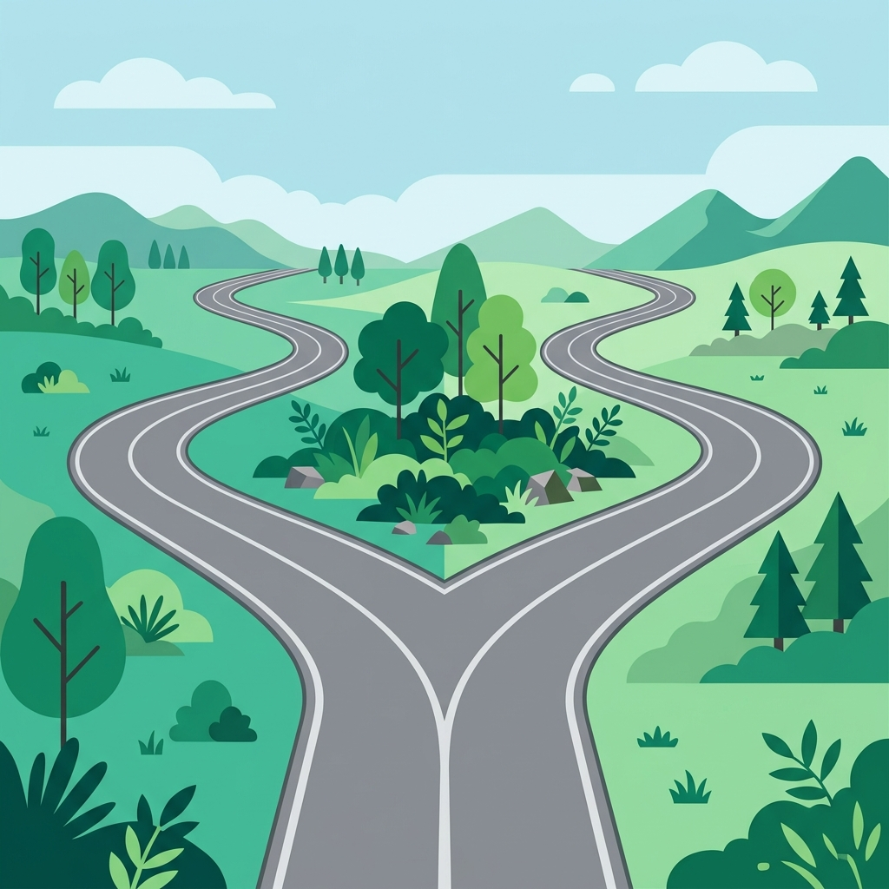

Walk forward in the same direction, without turning.
"Go straight ahead on Pine Street for two blocks."
Change direction to the left or to the right side.
"Walk to the corner of Main Street and turn left."
Turn right at the very first street or intersection you reach.
"Go down Park Road, and take the first right."
Walk or drive in front of a landmark without stopping.
"Go past the supermarket. The hospital is next to it."
On the other side of the street, facing the location.
"The Post Office is opposite the Library across the street."
The point where two streets intersect or join.
"The Cinema is at the corner of Main Street and High Street."

Far away from where most people live, travel, or visit.
"She lives in a quiet village that is off the beaten track."
An isolated place that is very far away from any towns or services.
"Their car broke down in the middle of nowhere, with no signal."

A very short distance; very close by.
"The Cafe is just a stone's throw from the Post Office."

The shortest direct distance between two points (in a straight line).
"It is only one mile as the crow flies, but much longer by road."

A road or street that is closed at one end and goes nowhere.
"Be careful not to drive down that lane; it's a dead end."

A point where a single road splits into two different directions.
"When you reach the fork in the road, turn left to stay on path."